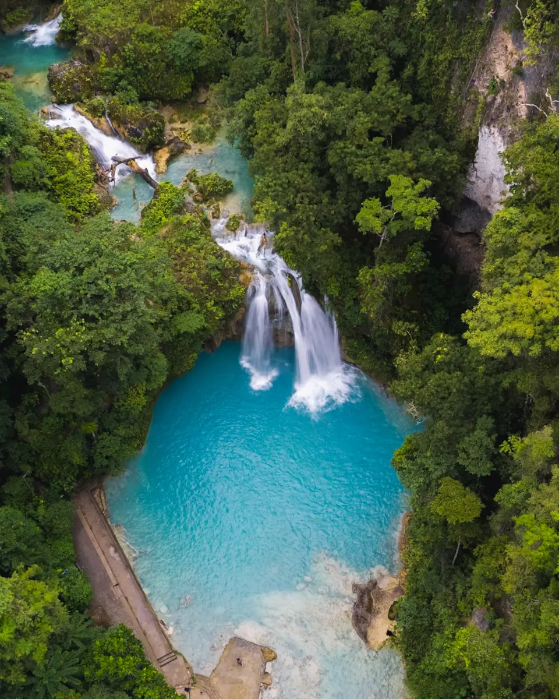
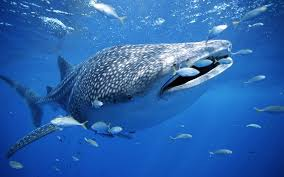
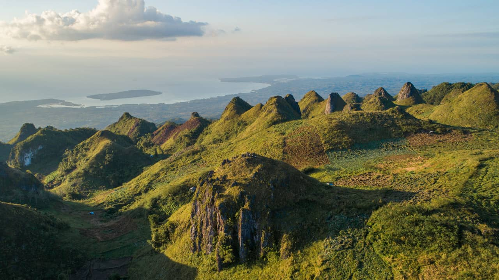

Discover
Best Spots in Cebu

Natural Wonder
Kawasan Falls
A stunning three-tiered waterfall in Badian with vivid turquoise water. Swim, raft, or go canyoneering through lush jungle rivers.

Marine Life
Oslob Whale Sharks
Swim alongside the world's biggest fish in the warm coastal waters of Oslob — a rare and unforgettable experience.

Heritage Landmark
Magellan's Cross
Planted in 1521 by Ferdinand Magellan, this sacred cross in Cebu City marks the birth of Christianity in the Philippines.

Highland Trek
Osmena Peak
The highest point in Cebu with dramatic jagged ridges and sweeping island views. Magical at sunrise and perfect for hikers.